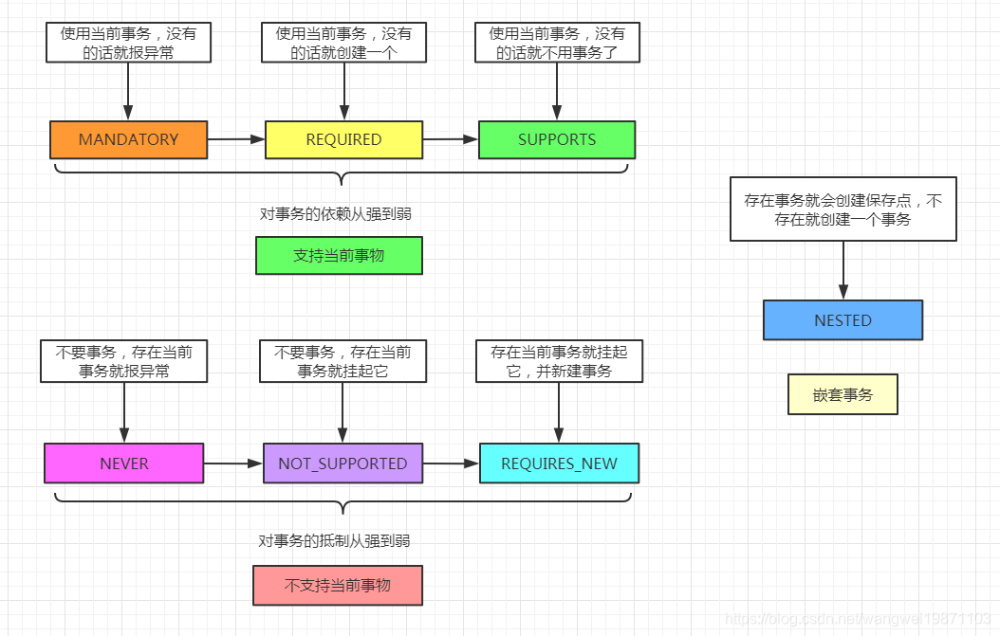
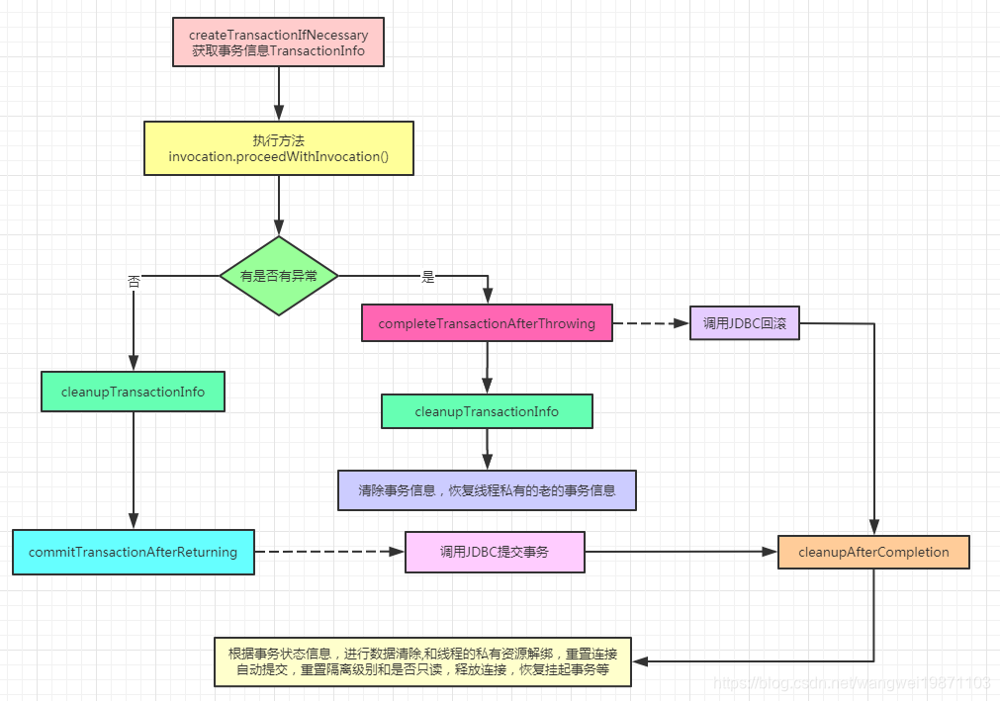
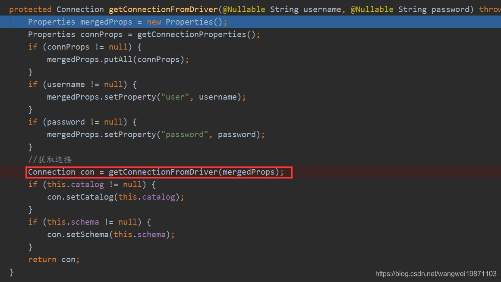
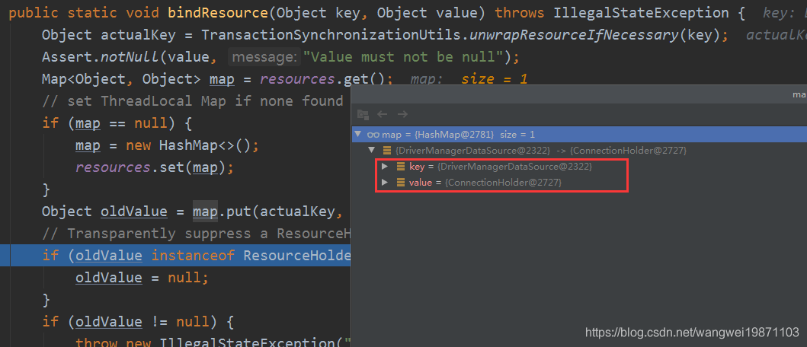
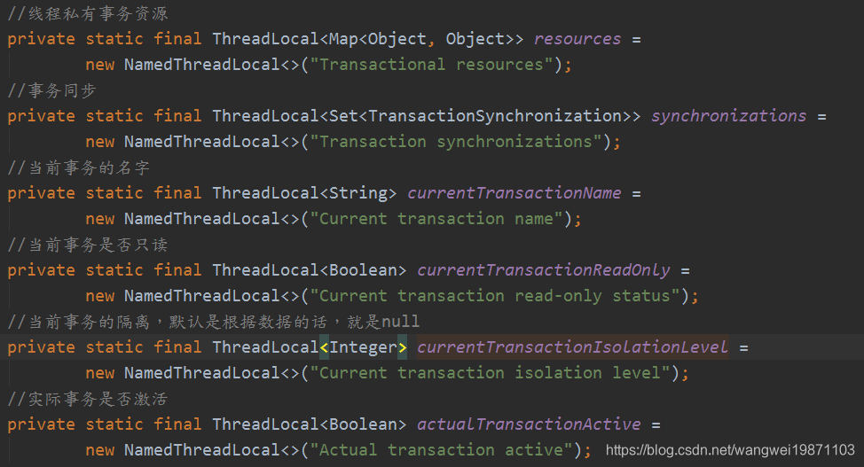
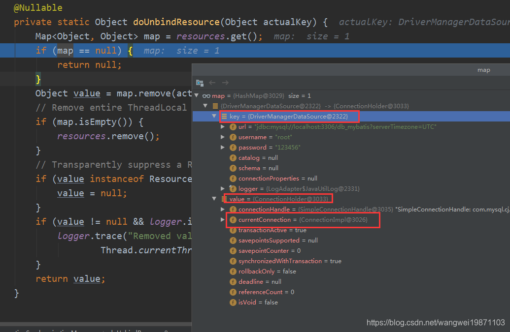
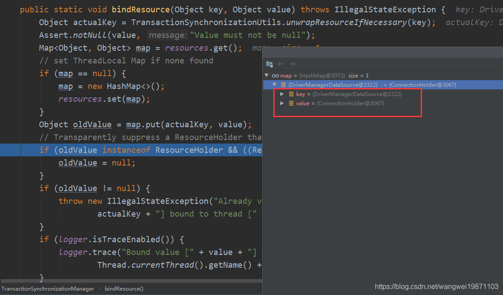

首先前面说了AOP事务的初始化，我们知道事务是基于AOP的拦截的，前面创建了JdkDynamicAopProxy：
x1final class JdkDynamicAopProxy implements AopProxy, InvocationHandler, Serializable {2 // 执行方法3 4 5 public Object invoke(Object proxy, Method method, Object[] args) throws Throwable {6 MethodInvocation invocation;7 Object oldProxy = null;8 boolean setProxyContext = false;9
10 TargetSource targetSource = this.advised.targetSource;11 Object target = null;12
13 try {14 if (!this.equalsDefined && AopUtils.isEqualsMethod(method)) {15 // The target does not implement the equals(Object) method itself.16 return equals(args[0]);17 }18 else if (!this.hashCodeDefined && AopUtils.isHashCodeMethod(method)) {19 // The target does not implement the hashCode() method itself.20 return hashCode();21 }22 else if (method.getDeclaringClass() == DecoratingProxy.class) {23 // There is only getDecoratedClass() declared -> dispatch to proxy config.24 return AopProxyUtils.ultimateTargetClass(this.advised);25 }26 else if (!this.advised.opaque && method.getDeclaringClass().isInterface() &&27 method.getDeclaringClass().isAssignableFrom(Advised.class)) {28 // Service invocations on ProxyConfig with the proxy config...29 return AopUtils.invokeJoinpointUsingReflection(this.advised, method, args);30 }31
32 Object retVal;33
34 if (this.advised.exposeProxy) {35 // Make invocation available if necessary.36 oldProxy = AopContext.setCurrentProxy(proxy);37 setProxyContext = true;38 }39
40 // Get as late as possible to minimize the time we "own" the target,41 // in case it comes from a pool.42 target = targetSource.getTarget();43 Class<?> targetClass = (target != null ? target.getClass() : null);44
45 // 获取调用链《事务加进来的是 TransactionInterceptor》46 // Get the interception chain for this method.47 List<Object> chain = this.advised.getInterceptorsAndDynamicInterceptionAdvice(method, targetClass);48
49 // Check whether we have any advice. If we don't, we can fallback on direct50 // reflective invocation of the target, and avoid creating a MethodInvocation.51 if (chain.isEmpty()) {52 // We can skip creating a MethodInvocation: just invoke the target directly53 // Note that the final invoker must be an InvokerInterceptor so we know it does54 // nothing but a reflective operation on the target, and no hot swapping or fancy proxying.55 Object[] argsToUse = AopProxyUtils.adaptArgumentsIfNecessary(method, args);56 retVal = AopUtils.invokeJoinpointUsingReflection(target, method, argsToUse);57 }58 else {59 // We need to create a method invocation...60 invocation = new ReflectiveMethodInvocation(proxy, target, method, args, targetClass, chain);61 62 // ---看2-1步---63 // Proceed to the joinpoint through the interceptor chain.64 retVal = invocation.proceed();65 // ---end---66 }67
68 // Massage return value if necessary.69 Class<?> returnType = method.getReturnType();70 if (retVal != null && retVal == target &&71 returnType != Object.class && returnType.isInstance(proxy) &&72 !RawTargetAccess.class.isAssignableFrom(method.getDeclaringClass())) {73 // Special case: it returned "this" and the return type of the method74 // is type-compatible. Note that we can't help if the target sets75 // a reference to itself in another returned object.76 retVal = proxy;77 }78 else if (retVal == null && returnType != Void.TYPE && returnType.isPrimitive()) {79 throw new AopInvocationException(80 "Null return value from advice does not match primitive return type for: " + method);81 }82 return retVal;83 }84 finally {85 if (target != null && !targetSource.isStatic()) {86 // Must have come from TargetSource.87 targetSource.releaseTarget(target);88 }89 if (setProxyContext) {90 // Restore old proxy.91 AopContext.setCurrentProxy(oldProxy);92 }93 }94 }95}351public Object proceed() throws Throwable {4 // We start with an index of -1 and increment early.5 if (this.currentInterceptorIndex == this.interceptorsAndDynamicMethodMatchers.size() - 1) {6 return invokeJoinpoint();7 }8
9 Object interceptorOrInterceptionAdvice =10 this.interceptorsAndDynamicMethodMatchers.get(++this.currentInterceptorIndex);11 if (interceptorOrInterceptionAdvice instanceof InterceptorAndDynamicMethodMatcher) {12 // Evaluate dynamic method matcher here: static part will already have13 // been evaluated and found to match.14 InterceptorAndDynamicMethodMatcher dm =15 (InterceptorAndDynamicMethodMatcher) interceptorOrInterceptionAdvice;16 Class<?> targetClass = (this.targetClass != null ? this.targetClass : this.method.getDeclaringClass());17 if (dm.methodMatcher.matches(this.method, targetClass, this.arguments)) {18 19 // ---看2-2步---20 // 执行拦截器方法 这里的拦截器就是 TransactionInterceptor 因此执行的是TransactionInterceptor的invoke方法21 return dm.interceptor.invoke(this);22 // ---end---23 }24 else {25 // Dynamic matching failed.26 // Skip this interceptor and invoke the next in the chain.27 return proceed();28 }29 }30 else {31 // It's an interceptor, so we just invoke it: The pointcut will have32 // been evaluated statically before this object was constructed.33 return ((MethodInterceptor) interceptorOrInterceptionAdvice).invoke(this);34 }35}141public Object invoke(MethodInvocation invocation) throws Throwable {4 // Work out the target class: may be {@code null}.5 // The TransactionAttributeSource should be passed the target class6 // as well as the method, which may be from an interface.7 Class<?> targetClass = (invocation.getThis() != null ? AopUtils.getTargetClass(invocation.getThis()) : null);8
9 // ---看2-3步---10 // 开始执行目标方法 涉及到事务传播机制11 // Adapt to TransactionAspectSupport's invokeWithinTransaction...12 return invokeWithinTransaction(invocation.getMethod(), targetClass, invocation::proceed);13 // ---end---s14} 获取事务属性源TransactionAttributeSource，然后获取方法的事务注解属性，如果缓存里没有，就会去解析方法上的事务注解，然后返回注解属性，然后获取事务管理器，也就是我们注入的DataSourceTransactionManager，之后创建事务信息，这个最重要，是为了回滚和提交用的，最后调用目标方法。
631protected Object invokeWithinTransaction(Method method, Class<?> targetClass,3 final InvocationCallback invocation) throws Throwable {4
5 //事务注解属性6 // If the transaction attribute is null, the method is non-transactional.7 TransactionAttributeSource tas = getTransactionAttributeSource();8 final TransactionAttribute txAttr = (tas != null ? tas.getTransactionAttribute(method, targetClass) : null);9 10 // ---看2-3.1步---11 //获取事务管理器12 final TransactionManager tm = determineTransactionManager(txAttr);13 // ---end---14
15 ...16
17 PlatformTransactionManager ptm = asPlatformTransactionManager(tm);18 //连接点唯一标识 类名+方法名19 final String joinpointIdentification = methodIdentification(method, targetClass, txAttr);20
21 if (txAttr == null || !(ptm instanceof CallbackPreferringPlatformTransactionManager)) {22 23 // ---看2-3.2步---24 // 创建事务信息25 // Standard transaction demarcation with getTransaction and commit/rollback calls.26 TransactionInfo txInfo = createTransactionIfNecessary(ptm, txAttr, joinpointIdentification);27 // ---end---28 29 Object retVal;30 try {31
32 //调用方法33 retVal = invocation.proceedWithInvocation();34 }35 catch (Throwable ex) {36 37 // ---看2-3.5步---38 // 异常处理39 completeTransactionAfterThrowing(txInfo, ex);40 // ---end---41 throw ex;42 }43 finally {44 45 // ---看2-3.6步---46 //清除事务信息，恢复线程私有的老的事务信息47 cleanupTransactionInfo(txInfo);48 // ---end---49 }50
51 ...52 53 // ---看2-3.7步---54 //成功后提交，会进行资源储量，连接释放，恢复挂起事务等操作55 commitTransactionAfterReturning(txInfo);56 // ---end---57 58 59 return retVal;60 }61
62
63} 这个方法就是要获取事务管理器，如果前面没注入事务的话getBean会报异常：
271protected PlatformTransactionManager determineTransactionManager( TransactionAttribute txAttr) {2 // Do not attempt to lookup tx manager if no tx attributes are set3 if (txAttr == null || this.beanFactory == null) {4 return getTransactionManager();5 }6
7 String qualifier = txAttr.getQualifier();8 if (StringUtils.hasText(qualifier)) {9 return determineQualifiedTransactionManager(this.beanFactory, qualifier);10 }11 else if (StringUtils.hasText(this.transactionManagerBeanName)) {12 return determineQualifiedTransactionManager(this.beanFactory, this.transactionManagerBeanName);13 }14 else {15 PlatformTransactionManager defaultTransactionManager = getTransactionManager();16 if (defaultTransactionManager == null) {17 defaultTransactionManager = this.transactionManagerCache.get(DEFAULT_TRANSACTION_MANAGER_KEY);18 if (defaultTransactionManager == null) {19 // 获取事务管理器 不存在的话就会报错 在初始化的时候已经注入20 defaultTransactionManager = this.beanFactory.getBean(PlatformTransactionManager.class);21 this.transactionManagerCache.putIfAbsent(22 DEFAULT_TRANSACTION_MANAGER_KEY, defaultTransactionManager);23 }24 }25 return defaultTransactionManager;26 }27}创建事务信息，首先会生成一个代理事务属性，然后进行事务的获取，主要还是分析事务注解上的属性来进行事务状态的创建，最后创建事务信息，将事务状态放入事务信息中。
361protected TransactionInfo createTransactionIfNecessary( PlatformTransactionManager tm,2 TransactionAttribute txAttr, final String joinpointIdentification) {3
4 // If no name specified, apply method identification as transaction name.5 if (txAttr != null && txAttr.getName() == null) {6 7 // 创建代理事务属性8 txAttr = new DelegatingTransactionAttribute(txAttr) {9 10 public String getName() {11 return joinpointIdentification;12 }13 };14 }15
16 TransactionStatus status = null;17 if (txAttr != null) {18 if (tm != null) {19 20 // ---看2-3.3步---21 // 获取事务状态22 status = tm.getTransaction(txAttr);23 // ---end---24 }25 else {26 if (logger.isDebugEnabled()) {27 logger.debug("Skipping transactional joinpoint [" + joinpointIdentification +28 "] because no transaction manager has been configured");29 }30 }31 }32 // ---看2-3.4步---33 // 准备事务34 return prepareTransactionInfo(tm, txAttr, joinpointIdentification, status);35 // ---end---36}831public final TransactionStatus getTransaction( TransactionDefinition definition)3 throws TransactionException {4
5
6 TransactionDefinition def = (definition != null ? definition : TransactionDefinition.withDefaults());7 8 // ---看2-3.3.1步---9 //获取事务10 Object transaction = doGetTransaction();11 // ---end---12 13 boolean debugEnabled = logger.isDebugEnabled();14 15 // ---看2-3.3.2步---16 //如果当前存在事务17 if (isExistingTransaction(transaction)) {18 // ---end---19 20 // ---看2-3.3.3步---21 //处理存在的传播情况22 return handleExistingTransaction(def, transaction, debugEnabled);23 // ---end---24 }25
26 // 检查超时27 if (def.getTimeout() < TransactionDefinition.TIMEOUT_DEFAULT) {//超时时间<-128 throw new InvalidTimeoutException("Invalid transaction timeout", def.getTimeout());29 }30 31 //当前没有事物存在，检查传播行为32 if (def.getPropagationBehavior() == TransactionDefinition.PROPAGATION_MANDATORY) {33 34 //强制是使用当前事务，没有的话就报异常35 throw new IllegalTransactionStateException(36 "No existing transaction found for transaction marked with propagation 'mandatory'");37 }38 else if (def.getPropagationBehavior() == TransactionDefinition.PROPAGATION_REQUIRED ||39 def.getPropagationBehavior() == TransactionDefinition.PROPAGATION_REQUIRES_NEW ||40 def.getPropagationBehavior() == TransactionDefinition.PROPAGATION_NESTED) {41 42 // ---看2-3.3.4步---43 //没有当前事务的话，REQUIRED，REQUIRES_NEW，NESTED挂起的是空事务，然后创建一个新事务44 SuspendedResourcesHolder suspendedResources = suspend(null);45 // ---end---46
47 try {48 //是否需要新同步49 boolean newSynchronization = (getTransactionSynchronization() != SYNCHRONIZATION_NEVER);50 51 // ---看2-3.3.7步---52 // 创建一个事务状态53 DefaultTransactionStatus status = newTransactionStatus(54 def, transaction, true, newSynchronization, debugEnabled, suspendedResources);55 // ---end---56 57 // ---看2-3.3.8步---58 //开启事务59 doBegin(transaction, def);60 // ---end---61 62 // ---看2-3.3.11步---63 //设置线程同步状态64 prepareSynchronization(status, def);65 // ---end---66 return status;67 }68 catch (RuntimeException | Error ex) {69 //恢复挂起的事务70 resume(null, suspendedResources);71 throw ex;72 }73 }74 else {75
76 if (def.getIsolationLevel() != TransactionDefinition.ISOLATION_DEFAULT && logger.isWarnEnabled()) {77 logger.warn("Custom isolation level specified but no actual transaction initiated; " +78 "isolation level will effectively be ignored: " + def);79 }80 boolean newSynchronization = (getTransactionSynchronization() == SYNCHRONIZATION_ALWAYS);81 return prepareTransactionStatus(def, null, true, newSynchronization, debugEnabled, null);82 }83} 获取事务，创建一个DataSourceTransactionObject 当做事务，设置是否允许保存点，然后获取连接持有器ConnectionHolder ，里面会存放JDBC的连接，设置给DataSourceTransactionObject ，当然第一次是空的。
121protected Object doGetTransaction() {3 // 当作事务4 DataSourceTransactionObject txObject = new DataSourceTransactionObject();5 // 是否允许保存点6 txObject.setSavepointAllowed(isNestedTransactionAllowed());7 // 获取连接持有器8 ConnectionHolder conHolder =9 (ConnectionHolder) TransactionSynchronizationManager.getResource(obtainDataSource());10 txObject.setConnectionHolder(conHolder, false);11 return txObject;12} 前面获取了事务，但是是创建的，如果要判断是否有事物存在就要看是否有JDBC连接，事务是否是激活的，当然第一次是没有连接持有器的，所有当前事务不存在：
61protected boolean isExistingTransaction(Object transaction) {3 DataSourceTransactionObject txObject = (DataSourceTransactionObject) transaction;4 //连接存在，且事务是激活的5 return (txObject.hasConnectionHolder() && txObject.getConnectionHolder().isTransactionActive());6} 当前存在事务处理，其实跟不存在逻辑，只是有些传播机制需要做特殊处理，比如NEVER发现有存在事务了就报异常了。比如NOT_SUPPORTED就会挂起当前事务，直接准备事务状态就返回了。如果是REQUIRES_NEW的话，挂起当前事务，创建一个新事务状态，并表示需要一个新事务，创建新连接，设置连接参数，同步线程私有变量状态，最后返回。如果是NESTED的话，能用保存点的话就创建一个事务状态，但是不需要新事务，然后创建保存点，剩下的直接准备事务状态就返回了。
821private TransactionStatus handleExistingTransaction(2 TransactionDefinition definition, Object transaction, boolean debugEnabled)3 throws TransactionException {4 5 //存在事务就报异常6 if (definition.getPropagationBehavior() == TransactionDefinition.PROPAGATION_NEVER) {7 throw new IllegalTransactionStateException(8 "Existing transaction found for transaction marked with propagation 'never'");9 }10 11 //不支持当前事务12 if (definition.getPropagationBehavior() == TransactionDefinition.PROPAGATION_NOT_SUPPORTED) {13 if (debugEnabled) {14 logger.debug("Suspending current transaction");15 }16 17 //挂起当前事务18 Object suspendedResources = suspend(transaction);19 boolean newSynchronization = (getTransactionSynchronization() == SYNCHRONIZATION_ALWAYS);20 return prepareTransactionStatus(21 definition, null, false, newSynchronization, debugEnabled, suspendedResources);22 }23 24 //需要新建事务，挂起当前事务25 if (definition.getPropagationBehavior() == TransactionDefinition.PROPAGATION_REQUIRES_NEW) {26 if (debugEnabled) {27 logger.debug("Suspending current transaction, creating new transaction with name [" +28 definition.getName() + "]");29 }30 //挂起当前事务并返回挂起的资源持有器31 SuspendedResourcesHolder suspendedResources = suspend(transaction);32 try {33 //是否需要新的同步34 boolean newSynchronization = (getTransactionSynchronization() != SYNCHRONIZATION_NEVER);35 //创建新的事务状态36 DefaultTransactionStatus status = newTransactionStatus(37 definition, transaction, true, newSynchronization, debugEnabled, suspendedResources);38 //准备创建连接开启事务39 doBegin(transaction, definition);40 //进行线程私有绑定41 prepareSynchronization(status, definition);42 return status;43 }44 catch (RuntimeException | Error beginEx) {45 resumeAfterBeginException(transaction, suspendedResources, beginEx);46 throw beginEx;47 }48 }49 //嵌套事务50 if (definition.getPropagationBehavior() == TransactionDefinition.PROPAGATION_NESTED) {51 //不允许就报异常52 if (!isNestedTransactionAllowed()) {53 throw new NestedTransactionNotSupportedException(54 "Transaction manager does not allow nested transactions by default - " +55 "specify 'nestedTransactionAllowed' property with value 'true'");56 }57 if (debugEnabled) {58 logger.debug("Creating nested transaction with name [" + definition.getName() + "]");59 }60 if (useSavepointForNestedTransaction()) {61
62 DefaultTransactionStatus status =63 prepareTransactionStatus(definition, transaction, false, false, debugEnabled, null);64 status.createAndHoldSavepoint();65 return status;66 }67 else {68
69 boolean newSynchronization = (getTransactionSynchronization() != SYNCHRONIZATION_NEVER);70 DefaultTransactionStatus status = newTransactionStatus(71 definition, transaction, true, newSynchronization, debugEnabled, null);72 doBegin(transaction, definition);73 prepareSynchronization(status, definition);74 return status;75 }76 }77
78
79 ...80 boolean newSynchronization = (getTransactionSynchronization() != SYNCHRONIZATION_NEVER);81 return prepareTransactionStatus(definition, transaction, false, newSynchronization, debugEnabled, null);82} AbstractPlatformTransactionManager的suspend挂起当前事务，有些传播机制需要挂起当前事务，比如NOT_SUPPORTED，REQUIRES_NEW。首先会清除所有线程相关的同步状态，如果当前事务存在的话，就进行一些属性的清除，比如清空连接持有器，清空线程私有变量的同步状态，最后把当前事务清除的属性保存到一个SuspendedResourcesHolder里，以便于恢复的时候设置会去。
481protected final SuspendedResourcesHolder suspend( Object transaction) throws TransactionException {3if (TransactionSynchronizationManager.isSynchronizationActive()) {4 List<TransactionSynchronization> suspendedSynchronizations = doSuspendSynchronization();5 try {6 Object suspendedResources = null;7 if (transaction != null) {8 9 // ---看2-3.3.5步---10 //挂起的资源，连接持有器11 suspendedResources = doSuspend(transaction);12 // ---end---s13 }14 15 //当前事务名字16 String name = TransactionSynchronizationManager.getCurrentTransactionName();17 //取消绑定18 TransactionSynchronizationManager.setCurrentTransactionName(null);19 //当前事务可读性20 boolean readOnly = TransactionSynchronizationManager.isCurrentTransactionReadOnly();21 TransactionSynchronizationManager.setCurrentTransactionReadOnly(false);22 //当前事务隔离级别23 Integer isolationLevel = TransactionSynchronizationManager.getCurrentTransactionIsolationLevel();24 TransactionSynchronizationManager.setCurrentTransactionIsolationLevel(null);25 //当前事务激活状态26 boolean wasActive = TransactionSynchronizationManager.isActualTransactionActive();27 TransactionSynchronizationManager.setActualTransactionActive(false);28 return new SuspendedResourcesHolder(29 suspendedResources, suspendedSynchronizations, name, readOnly, isolationLevel, wasActive);30 } catch (RuntimeException | Error ex) {31 // doSuspend failed - original transaction is still active...32 doResumeSynchronization(suspendedSynchronizations);33 throw ex;34 }35}36else if (transaction != null) {37 // Transaction active but no synchronization active.38 Object suspendedResources = doSuspend(transaction);39 40 // ---看2-3.3.6---41 // 创建持有器42 return new SuspendedResourcesHolder(suspendedResources);43 // ---end---44 45} else {46 // Neither transaction nor synchronization active.47 return null;48}执行挂起当前事务。
81protected Object doSuspend(Object transaction) {3 DataSourceTransactionObject txObject = (DataSourceTransactionObject) transaction;4 //清空连接持有器5 txObject.setConnectionHolder(null);6 //解绑线程私有的资源7 return TransactionSynchronizationManager.unbindResource(obtainDataSource());8}221private SuspendedResourcesHolder(2 Object suspendedResources, List<TransactionSynchronization> suspendedSynchronizations,3 String name, boolean readOnly, Integer isolationLevel, boolean wasActive) {4
5 //连接持有器6 this.suspendedResources = suspendedResources;7 8 //同步状态9 this.suspendedSynchronizations = suspendedSynchronizations;10 11 //方法名12 this.name = name;13 14 //是否只读15 this.readOnly = readOnly;16 17 //隔离级别，默认mysql是可重复度，oracle是提交读18 this.isolationLevel = isolationLevel;19
20 //事务是否激活21 this.wasActive = wasActive;22 } 这里有个参数很重要newTransaction，是否是新连接，比如当前事务不存在的情况下，肯定是true，但是如果存在，就有可能false，具体还是看传播机制。
331protected DefaultTransactionStatus newTransactionStatus(2 TransactionDefinition definition, Object transaction, boolean newTransaction,3 boolean newSynchronization, boolean debug, Object suspendedResources) {4 5 //是否要新同步，只有要新同步且当前无同步激活事务6 boolean actualNewSynchronization = newSynchronization &&7 !TransactionSynchronizationManager.isSynchronizationActive();8 9 // 默认事务状态10 return new DefaultTransactionStatus(11 transaction, newTransaction, actualNewSynchronization,12 definition.isReadOnly(), debug, suspendedResources);13}14
15
16// DefaultTransactionStatus 其实就是做个记录，这次事务的状态。17public DefaultTransactionStatus(18 Object transaction, boolean newTransaction, boolean newSynchronization,19 boolean readOnly, boolean debug, Object suspendedResources) {20
21 //新创建事务22 this.transaction = transaction;23 //是否需要新事务24 this.newTransaction = newTransaction;25 //是否要新同步26 this.newSynchronization = newSynchronization;27 //是否只读28 this.readOnly = readOnly;29 //是否要debug30 this.debug = debug;31 //是否有挂起的连接资源32 this.suspendedResources = suspendedResources;33}开启连接和事务，这里就是开启新连接的地方，如果当前事务没有连接资源了，就会去创建一个新的连接，然后设置连接属性，做一些事务的标记等，表示是一个新的事务了。
691protected void doBegin(Object transaction, TransactionDefinition definition) {3 DataSourceTransactionObject txObject = (DataSourceTransactionObject) transaction;4 Connection con = null;5
6 try {7 //当前事务没有连接资源8 if (!txObject.hasConnectionHolder() ||9 txObject.getConnectionHolder().isSynchronizedWithTransaction()) {10 11 // ---看2-3.3.9步---12 //创建新连接13 Connection newCon = obtainDataSource().getConnection();14 // ---end---15 if (logger.isDebugEnabled()) {16 logger.debug("Acquired Connection [" + newCon + "] for JDBC transaction");17 }18 //设置连接持有器19 txObject.setConnectionHolder(new ConnectionHolder(newCon), true);20 }21
22 //标记事务同步状态23 txObject.getConnectionHolder().setSynchronizedWithTransaction(true);24 con = txObject.getConnectionHolder().getConnection();25 26 //获取先前隔离级别，默认就是用数据库默认的27 Integer previousIsolationLevel = DataSourceUtils.prepareConnectionForTransaction(con, definition);28 //设置先前隔离级别29 txObject.setPreviousIsolationLevel(previousIsolationLevel);30 //设置是否只读31 txObject.setReadOnly(definition.isReadOnly());32
33 if (con.getAutoCommit()) {34 //设置需要回复自动提交35 txObject.setMustRestoreAutoCommit(true);36 if (logger.isDebugEnabled()) {37 logger.debug("Switching JDBC Connection [" + con + "] to manual commit");38 }39 //关闭自动提交40 con.setAutoCommit(false);41 }42 43 //是否需要设置只读命令44 prepareTransactionalConnection(con, definition);45 //标记激活事务46 txObject.getConnectionHolder().setTransactionActive(true);47
48 int timeout = determineTimeout(definition);49 if (timeout != TransactionDefinition.TIMEOUT_DEFAULT) {50 txObject.getConnectionHolder().setTimeoutInSeconds(timeout);51 }52
53
54 //是新事务的话就绑定到线程私有55 if (txObject.isNewConnectionHolder()) {56 // ---看2-3.3.10---57 TransactionSynchronizationManager.bindResource(obtainDataSource(), txObject.getConnectionHolder());58 // ---end---59 }60 }61
62 catch (Throwable ex) {63 if (txObject.isNewConnectionHolder()) {64 DataSourceUtils.releaseConnection(con, obtainDataSource());65 txObject.setConnectionHolder(null, false);66 }67 throw new CannotCreateTransactionException("Could not open JDBC Connection for transaction", ex);68 }69} 其实就是设置用户名和密码，最终是调用JDBC来获取连接。

这里就是数据源和连接资源的绑定。

设置各种线程私有变量的状态。
131protected void prepareSynchronization(DefaultTransactionStatus status, TransactionDefinition definition) {2 3 // 都是当前事务相关的信息。4 if (status.isNewSynchronization()) {5 TransactionSynchronizationManager.setActualTransactionActive(status.hasTransaction());6 TransactionSynchronizationManager.setCurrentTransactionIsolationLevel(7 definition.getIsolationLevel() != TransactionDefinition.ISOLATION_DEFAULT ?8 definition.getIsolationLevel() : null);9 TransactionSynchronizationManager.setCurrentTransactionReadOnly(definition.isReadOnly());10 TransactionSynchronizationManager.setCurrentTransactionName(definition.getName());11 TransactionSynchronizationManager.initSynchronization();12 }13}
创建了一个TransactionInfo ，然后把事务管理器，事务注解属性，方法标识符，事务状态设置进去。然后绑定到当前线程私有变量里。
251protected TransactionInfo prepareTransactionInfo( PlatformTransactionManager tm,2 TransactionAttribute txAttr, String joinpointIdentification,3 TransactionStatus status) {4 5 //创建事务信息6 TransactionInfo txInfo = new TransactionInfo(tm, txAttr, joinpointIdentification);7 if (txAttr != null) {8 ...9 10 //设置新事务状态11 txInfo.newTransactionStatus(status);12 }13 else {14
15 if (logger.isTraceEnabled()) {16 logger.trace("No need to create transaction for [" + joinpointIdentification +17 "]: This method is not transactional.");18 }19 }20 ...21 22 //事务信息绑定到当前线程23 txInfo.bindToThread();24 return txInfo;25} 如果支持回滚的话就进行回滚，否则就处理提交，提交里面如果TransactionStatus.isRollbackOnly()=true的话也会进行回滚处理。
461protected void completeTransactionAfterThrowing( TransactionInfo txInfo, Throwable ex) {2 if (txInfo != null && txInfo.getTransactionStatus() != null) {3 if (logger.isTraceEnabled()) {4 logger.trace("Completing transaction for [" + txInfo.getJoinpointIdentification() +5 "] after exception: " + ex);6 }7 8 // ---看2-3.5.1步---9 // rollbackOn 是否可以回滚 10 if (txInfo.transactionAttribute != null && txInfo.transactionAttribute.rollbackOn(ex)) {11 // ---end---12 13 try {14 15 // ---看2-3.5.2步---16 //进行回滚17 txInfo.getTransactionManager().rollback(txInfo.getTransactionStatus());18 // ---end---19 }20 catch (TransactionSystemException ex2) {21 logger.error("Application exception overridden by rollback exception", ex);22 ex2.initApplicationException(ex);23 throw ex2;24 }25 catch (RuntimeException | Error ex2) {26 logger.error("Application exception overridden by rollback exception", ex);27 throw ex2;28 }29 }30 else {31
32 try {33 txInfo.getTransactionManager().commit(txInfo.getTransactionStatus());34 }35 catch (TransactionSystemException ex2) {36 logger.error("Application exception overridden by commit exception", ex);37 ex2.initApplicationException(ex);38 throw ex2;39 }40 catch (RuntimeException | Error ex2) {41 logger.error("Application exception overridden by commit exception", ex);42 throw ex2;43 }44 }45 }46} 先处理回滚的规则，就是事务注解里的rollbackFor，rollbackForClassName，noRollbackFor，noRollbackForClassName属性。如果没有设置就会调用父类的rollbackOn。
471public boolean rollbackOn(Throwable ex) {3 return this.targetAttribute.rollbackOn(ex);4}5
6// 重载方法7public boolean rollbackOn(Throwable ex) {9 if (logger.isTraceEnabled()) {10 logger.trace("Applying rules to determine whether transaction should rollback on " + ex);11 }12
13 RollbackRuleAttribute winner = null;14 int deepest = Integer.MAX_VALUE;15 16 //处理设置的回滚规则17 if (this.rollbackRules != null) {18 for (RollbackRuleAttribute rule : this.rollbackRules) {19 int depth = rule.getDepth(ex);20 if (depth >= 0 && depth < deepest) {21 deepest = depth;22 winner = rule;23 }24 }25 }26
27 if (logger.isTraceEnabled()) {28 logger.trace("Winning rollback rule is: " + winner);29 }30
31 // User superclass behavior (rollback on unchecked) if no rule matches.32 if (winner == null) {33 logger.trace("No relevant rollback rule found: applying default rules");34 // 调用父类的是否会滚35 return super.rollbackOn(ex);36 }37
38 return !(winner instanceof NoRollbackRuleAttribute);39}40
41// super.rollbackOn(ex);42// DefaultTransactionAttribute的rollbackOn43// 可以看到这里就是的异常，要么是RuntimeException的实例，要么是Error的实例。44public boolean rollbackOn(Throwable ex) {46 return (ex instanceof RuntimeException || ex instanceof Error);47}事务管理器根据事务状态来处理回滚。
141public final void rollback(TransactionStatus status) throws TransactionException {3 if (status.isCompleted()) {4 throw new IllegalTransactionStateException(5 "Transaction is already completed - do not call commit or rollback more than once per transaction");6 }7
8 DefaultTransactionStatus defStatus = (DefaultTransactionStatus) status;9 10 // ---看2-3.5.3步---11 // 会滚处理12 processRollback(defStatus, false);13 // ---end---14} unexpectedRollback这个一般是false，除非是设置rollback-only=true，才是true，表示是全局的回滚标记。首先会进行回滚前回调，然后判断是否设置了保存点，比如NESTED会设置，要先回滚到保存点。如果状态是新的事务，那就进行回滚，如果不是新的，就设置一个回滚标记，内部是设置连接持有器回滚标记。然后回滚完成回调，根据事务状态信息，完成后数据清除,和线程的私有资源解绑，重置连接自动提交，隔离级别，是否只读，释放连接，恢复挂起事务等。
791private void processRollback(DefaultTransactionStatus status, boolean unexpected) {2 try {3 //意外的回滚4 boolean unexpectedRollback = unexpected;5
6 try {7 //回滚完成前回调8 triggerBeforeCompletion(status);9 10 //有保存点回滚到保存点11 if (status.hasSavepoint()) {12 if (status.isDebug()) {13 logger.debug("Rolling back transaction to savepoint");14 }15 16 // ---看2-3.5.4步---17 status.rollbackToHeldSavepoint();18 // ---end---19 }20 21 //当前状态是一个新事务22 else if (status.isNewTransaction()) {23 if (status.isDebug()) {24 logger.debug("Initiating transaction rollback");25 }26 27 // ---看2-3.5.6步---28 //进行回滚29 doRollback(status);30 // ---end---31 }32 else {33 34 // Participating in larger transaction35 if (status.hasTransaction()) {36 if (status.isLocalRollbackOnly() || isGlobalRollbackOnParticipationFailure()) {37 if (status.isDebug()) {38 logger.debug("Participating transaction failed - marking existing transaction as rollback-only");39 }40 41 // ---看2-3.5.7步---42 //设置连接要回滚标记，也就是全局回滚43 doSetRollbackOnly(status);44 // ---end---45 } else {46 if (status.isDebug()) {47 logger.debug("Participating transaction failed - letting transaction originator decide on rollback");48 }49 }50 } else {51 logger.debug("Should roll back transaction but cannot - no transaction available");52 }53 // Unexpected rollback only matters here if we're asked to fail early54 if (!isFailEarlyOnGlobalRollbackOnly()) {55 unexpectedRollback = false;56 }57 }58 } catch (RuntimeException | Error ex) {59 triggerAfterCompletion(status, TransactionSynchronization.STATUS_UNKNOWN);60 throw ex;61 }62 63 //回滚完成后回调64 triggerAfterCompletion(status, TransactionSynchronization.STATUS_ROLLED_BACK);65
66 // Raise UnexpectedRollbackException if we had a global rollback-only marker67 if (unexpectedRollback) {68 throw new UnexpectedRollbackException(69 "Transaction rolled back because it has been marked as rollback-only");70 }71 } finally {72 73 // ---看2-3.5.8步---74 // 会滚后处理75 //根据事务状态信息，完成后数据清除,和线程的私有资源解绑，重置连接自动提交，隔离级别，是否只读，释放连接，恢复挂起事务等76 cleanupAfterCompletion(status);77 // ---end---78 }79} 会滚的保存点。如果设置了保存点的话，会进行处理，回滚到保存点，内部就是调用JDBC的连接回滚，释放保存点，其实没做什么，空的，最后清除保存点：
171public void rollbackToHeldSavepoint() throws TransactionException {2 Object savepoint = getSavepoint();3 if (savepoint == null) {4 throw new TransactionUsageException(5 "Cannot roll back to savepoint - no savepoint associated with current transaction");6 }7 8 // ---看2-3.5.5步---9 //回滚到保存点10 getSavepointManager().rollbackToSavepoint(savepoint);11 // ---end---12 13 //释放保存点，其实啥都没做14 getSavepointManager().releaseSavepoint(savepoint);15 //清除保存点16 setSavepoint(null);17} 内部就是获取连接对象，然后调用rollback回滚到保存点，然后重置连接持有器的回滚标记为false。所以这里不会影响外层的提交，否则外层提交的时候发现有回滚标记，会进行回滚的，这个在讲提交的时候会说到。
131public void rollbackToSavepoint(Object savepoint) throws TransactionException {3 ConnectionHolder conHolder = getConnectionHolderForSavepoint();4 try {5 //回滚到保存点6 conHolder.getConnection().rollback((Savepoint) savepoint);7 //重置回滚标记,不需要回滚 rollbackOnlly=false8 conHolder.resetRollbackOnly();9 }10 catch (Throwable ex) {11 throw new TransactionSystemException("Could not roll back to JDBC savepoint", ex);12 }13} 真正的回滚就是这里啦，也是获取到JDBC的连接，然后回滚。
151protected void doRollback(DefaultTransactionStatus status) {3 DataSourceTransactionObject txObject = (DataSourceTransactionObject) status.getTransaction();4 Connection con = txObject.getConnectionHolder().getConnection();5 if (status.isDebug()) {6 logger.debug("Rolling back JDBC transaction on Connection [" + con + "]");7 }8 try {9 //jdbc的回滚10 con.rollback();11 }12 catch (SQLException ex) {13 throw new TransactionSystemException("Could not roll back JDBC transaction", ex);14 }15}如果既没有保存点，又不是新的事务，如果可以设置全局的回滚标记的话，就会设置。
151protected void doSetRollbackOnly(DefaultTransactionStatus status) {3 DataSourceTransactionObject txObject = (DataSourceTransactionObject) status.getTransaction();4 if (status.isDebug()) {5 logger.debug("Setting JDBC transaction [" + txObject.getConnectionHolder().getConnection() +6 "] rollback-only");7 }8 txObject.setRollbackOnly();9}10
11// 最终就是设置了连接持有器的回滚标记啦。12// 设置会滚标记13public void setRollbackOnly() {14 getConnectionHolder().setRollbackOnly();15}看上去很像没多少东西，其实里面涉及好多呢，比如如果是新的事务同步状态的话，要把线程的同步状态清除了，如果是新事务的话，进行数据清除,线程的私有资源解绑，重置连接自动提交，隔离级别，是否只读，释放连接等。如果有挂起的事务，还要把这个事务给恢复，其实就是把属性设置回去。
311private void cleanupAfterCompletion(DefaultTransactionStatus status) {2 status.setCompleted();3 if (status.isNewSynchronization()) {4 5 // ---看2-3.5.8.1步---6 //线程同步状态清除7 TransactionSynchronizationManager.clear();8 // ---end---9 }10 11 //是新事务的话，进行数据清除,线程的私有资源解绑，重置连接自动提交，隔离级别，是否只读，释放连接等12 if (status.isNewTransaction()) {13 14 // ---看2-3.5.8.2步---15 doCleanupAfterCompletion(status.getTransaction());16 // ---end---17 }18 19 //有挂起的事务要恢复20 if (status.getSuspendedResources() != null) {21 if (status.isDebug()) {22 logger.debug("Resuming suspended transaction after completion of inner transaction");23 }24 Object transaction = (status.hasTransaction() ? status.getTransaction() : null);25 26 // ---看2-3.5.8.7步---27 // 恢复挂起事务28 resume(transaction, (SuspendedResourcesHolder) status.getSuspendedResources());29 // ---end---30 }31}doCleanupAfterCompletion对下边的属性进行清除。
71 public static void clear() {2 synchronizations.remove();3 currentTransactionName.remove();4 currentTransactionReadOnly.remove();5 currentTransactionIsolationLevel.remove();6 actualTransactionActive.remove();7 }这里就是做跟连接相关的操作，比如重置自动提交啊，只读属性啊，解绑数据源啊，释放连接啊，清除链接持有器属性啊。
471 2 protected void doCleanupAfterCompletion(Object transaction) {3 DataSourceTransactionObject txObject = (DataSourceTransactionObject) transaction;4
5 6 // Remove the connection holder from the thread, if exposed.7 //接触数据源和连接的绑定8 if (txObject.isNewConnectionHolder()) {9 // ---看2-3.5.8.3步---10 TransactionSynchronizationManager.unbindResource(obtainDataSource());11 // ---end---12 }13
14 // Reset connection.15 Connection con = txObject.getConnectionHolder().getConnection();16 try {17 if (txObject.isMustRestoreAutoCommit()) {18 //充实连接自动提交属性19 con.setAutoCommit(true);20 }21 22 // ---看2-3.5.8.4步---23 //重置隔离级别，是否只读等24 DataSourceUtils.resetConnectionAfterTransaction(25 con, txObject.getPreviousIsolationLevel(), txObject.isReadOnly());26 // ---end---27 }28 catch (Throwable ex) {29 logger.debug("Could not reset JDBC Connection after transaction", ex);30 }31
32 if (txObject.isNewConnectionHolder()) {33 if (logger.isDebugEnabled()) {34 logger.debug("Releasing JDBC Connection [" + con + "] after transaction");35 }36 37 // ---看2-3.5.8.5步---38 //释放连接39 DataSourceUtils.releaseConnection(con, this.dataSource);40 // ---end---41 }42
43 // ---看2-3.5.8.6步---44 //连接持有器属性清除45 txObject.getConnectionHolder().clear();46 // ---end---s47 }141public static Object unbindResource(Object key) throws IllegalStateException {2 //获取数据源3 Object actualKey = TransactionSynchronizationUtils.unwrapResourceIfNecessary(key);4 //获取解绑的连接持有器5 Object value = doUnbindResource(actualKey);6 if (value == null) {7 throw new IllegalStateException(8 "No value for key [" + actualKey + "] bound to thread [" + Thread.currentThread().getName() + "]");9 }10 return value;11}12
13// doUnbindResource14

其实就是从线程私有变量resources中删除了，这个是个map，因为可能有多个数据源绑定多个连接的。
其实就是重置事务隔离状态和是否只读。
171public static void resetConnectionAfterTransaction(2 Connection con, Integer previousIsolationLevel, boolean resetReadOnly) {3 ...4 try {5 if (previousIsolationLevel != null) {6 ...7 con.setTransactionIsolation(previousIsolationLevel);8 }9 if (resetReadOnly) {10 ...11 con.setReadOnly(false);12 }13 }14 catch (Throwable ex) {15 logger.debug("Could not reset JDBC Connection after transaction", ex);16 }17}释放JDBC
381public static void releaseConnection( Connection con, DataSource dataSource) {2 try {3 doReleaseConnection(con, dataSource);4 }5 catch (SQLException ex) {6 logger.debug("Could not close JDBC Connection", ex);7 }8 catch (Throwable ex) {9 logger.debug("Unexpected exception on closing JDBC Connection", ex);10 }11}12
13// doReleaseConnection14public static void doReleaseConnection( Connection con, DataSource dataSource) throws SQLException {15 if (con == null) {16 return;17 }18 if (dataSource != null) {19 //获取连接持有器，如果前面解除绑定非就拿不到了20 ConnectionHolder conHolder = (ConnectionHolder) TransactionSynchronizationManager.getResource(dataSource);21 //如果连接持有器能拿到的话22 if (conHolder != null && connectionEquals(conHolder, con)) {23 // It's the transactional Connection: Don't close it.24 conHolder.released();25 return;26 }27 }28 //关闭连接29 doCloseConnection(con, dataSource);30}31
32// doCloseConnection33public static void doCloseConnection(Connection con, DataSource dataSource) throws SQLException {34 // 如果不是SmartDataSource类型就关闭连接了35 if (!(dataSource instanceof SmartDataSource) || ((SmartDataSource) dataSource).shouldClose(con)) {36 con.close();37 }38}连接关闭了，最后连接持有器也应该清除状态。
141public void clear() {3 super.clear();4 this.transactionActive = false;5 this.savepointsSupported = null;6 this.savepointCounter = 0;7}8
9// 父类的clear 清除同步状态和会滚状态10public void clear() {11 this.synchronizedWithTransaction = false;12 this.rollbackOnly = false;13 this.deadline = null;14}恢复挂起的事务，如果前面有事务被挂起了，现在就要恢复，其实就是把一些属性设置回去。
291protected final void resume( Object transaction, SuspendedResourcesHolder resourcesHolder)2 throws TransactionException {3 //一堆属性和状态设置回去4 if (resourcesHolder != null) {5 Object suspendedResources = resourcesHolder.suspendedResources;6 if (suspendedResources != null) {7 8 // 执行恢复9 doResume(transaction, suspendedResources);10 }11 List<TransactionSynchronization> suspendedSynchronizations = resourcesHolder.suspendedSynchronizations;12 //如果有挂起同步器的话要设置线程私有变量的值为挂起事务的相关属性13 if (suspendedSynchronizations != null) {14 TransactionSynchronizationManager.setActualTransactionActive(resourcesHolder.wasActive);15 TransactionSynchronizationManager.setCurrentTransactionIsolationLevel(resourcesHolder.isolationLevel);16 TransactionSynchronizationManager.setCurrentTransactionReadOnly(resourcesHolder.readOnly);17 TransactionSynchronizationManager.setCurrentTransactionName(resourcesHolder.name);18 19 // 执行恢复20 doResumeSynchronization(suspendedSynchronizations);21 }22 }23}24
25// doResume26protected void doResume( Object transaction, Object suspendedResources) {28 TransactionSynchronizationManager.bindResource(obtainDataSource(), suspendedResources);29} 把他们放到resources的map中。

清除事务信息，处理完之后，最后还要清除事务信息，其实就是恢复线程私有变量的状态，设置回老的，因为前面有绑定线程的时候有设置过新的：
51protected void cleanupTransactionInfo( TransactionInfo txInfo) {2 if (txInfo != null) {3 txInfo.restoreThreadLocalStatus();4 }5}调用事务管理器的提交方法。
111protected void commitTransactionAfterReturning( TransactionInfo txInfo) {2 if (txInfo != null && txInfo.getTransactionStatus() != null) {3 if (logger.isTraceEnabled()) {4 logger.trace("Completing transaction for [" + txInfo.getJoinpointIdentification() + "]");5 }6 7 // ---2-3.7.1步---8 txInfo.getTransactionManager().commit(txInfo.getTransactionStatus());9 // ---end---10 }11}提交事务。这里就是前面我说了，就算没有异常，但是提交的时候也可能会回滚，因为有内层事务可能会标记回滚。所以这里先判断是否状态是否需要本地回滚，也就是设置回滚标记为全局回滚，不会进行回滚，再判断是否需要全局回滚，就是真的执行回滚。但是这里如果是发现有全局回滚，还要进行提交，就会报异常。
341public final void commit(TransactionStatus status) throws TransactionException {3 if (status.isCompleted()) {4 throw new IllegalTransactionStateException(5 "Transaction is already completed - do not call commit or rollback more than once per transaction");6 }7
8 DefaultTransactionStatus defStatus = (DefaultTransactionStatus) status;9 //当前事务状态需要回滚10 if (defStatus.isLocalRollbackOnly()) {11 if (defStatus.isDebug()) {12 logger.debug("Transactional code has requested rollback");13 }14 //不可预期的回滚15 processRollback(defStatus, false);16 return;17 }18 19 //设置了全局回滚20 if (!shouldCommitOnGlobalRollbackOnly() && defStatus.isGlobalRollbackOnly()) {21 if (defStatus.isDebug()) {22 logger.debug("Global transaction is marked as rollback-only but transactional code requested commit");23 }24 25 //可预期的回滚，可能会报异常26 processRollback(defStatus, true);27 return;28 }29 30 // ---看2-3.7.2步---31 //处理提交32 processCommit(defStatus);33 // ---end---34}其实这个跟处理回滚很像，先处理保存点，然后处理新事务，如果不是新事务不会真正提交，要等外层是新事务的才提交，最后根据条件执行数据清除,线程的私有资源解绑，重置连接自动提交，隔离级别，是否只读，释放连接，恢复挂起事务等。
921private void processCommit(DefaultTransactionStatus status) throws TransactionException {2 try {3 boolean beforeCompletionInvoked = false;4
5 try {6 boolean unexpectedRollback = false;7 prepareForCommit(status);8 //提交前回调9 triggerBeforeCommit(status);10 11 //提交完成前回调12 triggerBeforeCompletion(status);13 beforeCompletionInvoked = true;14
15 //有保存点16 if (status.hasSavepoint()) {17 if (status.isDebug()) {18 logger.debug("Releasing transaction savepoint");19 }20 21 22 //是否有全局回滚标记23 unexpectedRollback = status.isGlobalRollbackOnly();24 // ---看2-3.7.2.1步---25 status.releaseHeldSavepoint();26 // ---end---27 }28 29 //当前状态是新事务30 else if (status.isNewTransaction()) {31 if (status.isDebug()) {32 logger.debug("Initiating transaction commit");33 }34 unexpectedRollback = status.isGlobalRollbackOnly();35
36 // ---看2-3.7.2.2步--- 37 //真正的提交38 doCommit(status);39 // ---end---40 }41 else if (isFailEarlyOnGlobalRollbackOnly()) {42 unexpectedRollback = status.isGlobalRollbackOnly();43 }44
45 //有全局回滚标记就报异常46 // Throw UnexpectedRollbackException if we have a global rollback-only47 // marker but still didn't get a corresponding exception from commit.48 if (unexpectedRollback) {49 throw new UnexpectedRollbackException(50 "Transaction silently rolled back because it has been marked as rollback-only");51 }52 }53 catch (UnexpectedRollbackException ex) {54 // can only be caused by doCommit55 triggerAfterCompletion(status, TransactionSynchronization.STATUS_ROLLED_BACK);56 throw ex;57 }58 catch (TransactionException ex) {59 // can only be caused by doCommit60 if (isRollbackOnCommitFailure()) {61 doRollbackOnCommitException(status, ex);62 }63 else {64 triggerAfterCompletion(status, TransactionSynchronization.STATUS_UNKNOWN);65 }66 throw ex;67 }68 catch (RuntimeException | Error ex) {69 if (!beforeCompletionInvoked) {70 triggerBeforeCompletion(status);71 }72 doRollbackOnCommitException(status, ex);73 throw ex;74 }75
76 // Trigger afterCommit callbacks, with an exception thrown there77 // propagated to callers but the transaction still considered as committed.78 try {79 //提交后回调80 triggerAfterCommit(status);81 }82 finally {83 //提交后清除线程私同步状态84 triggerAfterCompletion(status, TransactionSynchronization.STATUS_COMMITTED);85 }86
87 }88 finally {89 //根据条件，完成后数据清除,和线程的私有资源解绑，重置连接自动提交，隔离级别，是否只读，释放连接，恢复挂起事务等90 cleanupAfterCompletion(status);91 }92}释放保存点，如果没有异常回滚的话，要释放保存点。
231public void releaseHeldSavepoint() throws TransactionException {2 Object savepoint = getSavepoint();3 if (savepoint == null) {4 throw new TransactionUsageException(5 "Cannot release savepoint - no savepoint associated with current transaction");6 }7 8 // 直接调用JDBC的方法进行释放9 getSavepointManager().releaseSavepoint(savepoint);10 setSavepoint(null);11}12
13//releaseSavepoint14public void releaseSavepoint(Object savepoint) throws TransactionException {16 ConnectionHolder conHolder = getConnectionHolderForSavepoint();17 try {18 conHolder.getConnection().releaseSavepoint((Savepoint) savepoint);19 }20 catch (Throwable ex) {21 logger.debug("Could not explicitly release JDBC savepoint", ex);22 }23}JDBC执行提交。
151protected void doCommit(DefaultTransactionStatus status) {3 DataSourceTransactionObject txObject = (DataSourceTransactionObject) status.getTransaction();4 Connection con = txObject.getConnectionHolder().getConnection();5 if (status.isDebug()) {6 logger.debug("Committing JDBC transaction on Connection [" + con + "]");7 }8 try {9 //JDBC连接提交10 con.commit();11 }12 catch (SQLException ex) {13 throw new TransactionSystemException("Could not commit JDBC transaction", ex);14 }15}